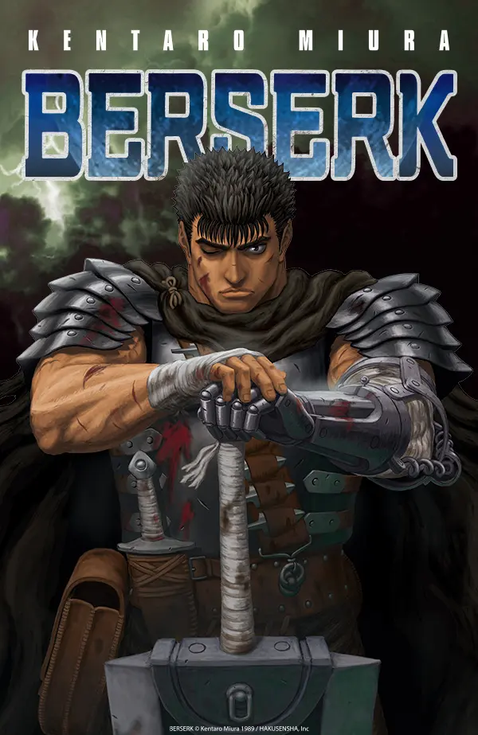
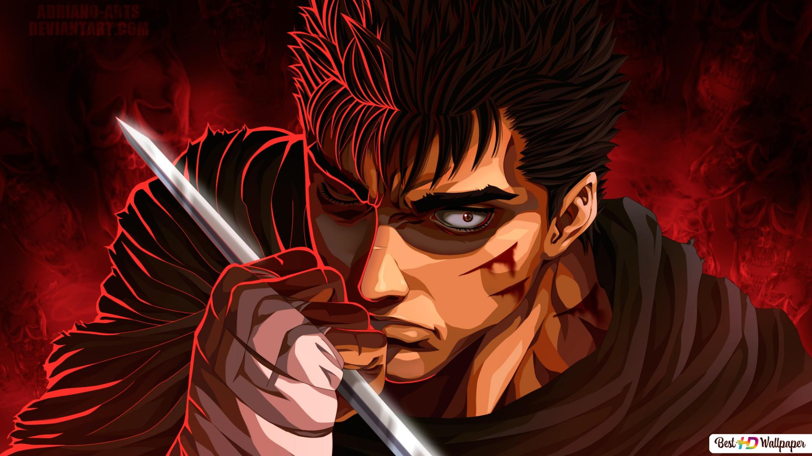
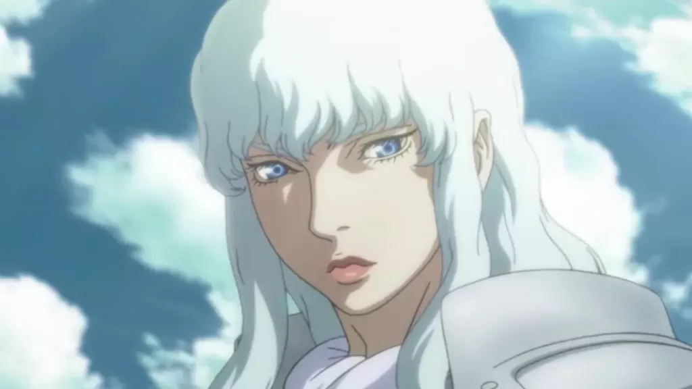

L'un de mes plus gros centres d'intérêts n'est d'autre que les jeux vidéos. Je passe la plupart de mon temps libre à jouer à des jeux ou même à en créer, n'étant pas quelqu'un de difficile je joue aussi à beaucoup de jeux différents ce qui me permet donc d'avoir un avis forgé sur tous les types de jeux
Qu'est ce que Satisfactory ?
Satisfactory est un jeu vidéo de simulation de construction à la première personne dans un monde ouvert. Le jeu est sortie le 19 mars 2019 en Early Access, il est jouable en solo ou jusqu'à quatre joueurs. Le but du jeu est d'explorer une planète, de construire, d'automatiser et de gérer sa propre usine.
Quel personnage jouons-nous ?
Le joueur incarne un ingénieur de la société FICSIT Inc et est largué à bord d'une capsule sur une planète. Son objectif est de construire différents bâtiments et de les relier ensemble afin de créer une usine entièrement automatisée pour pouvoir créer un ascenseur spatial afin d'envoyer les ressources extraites et de plus en plus complexes à FICSIT Inc. Il devra gérer la production d’énergie, le transport, l’extraction minière pour y parvenir.
Mon avis sur le jeu
J'ai personnellement énormément apprécié jouer à ce jeu et ça me dirait bien de le recommencer un jour ou l'autre. Le côté que j'ai vraiment aimé c'est le côté éléctricité car tout dans le jeu est exactement comme dans la vrai vie, on peut mettre des onduleurs pour éviter les coupures, on doit trouver des nouveaux moyens de produires de l'éléctricités et ne pas surcharger le réseau sinon le courant s'éteint et toute la production aussi ! Pour pouvoir avancer il faut optimiser au mieux son usine afin de ne pas utiliser trop d'éléctricité mais aussi de produire la bonne quantité de matériaux au bon moment. Ce jeu mélange mathématiques, réflexion, découverte et j'en passe ! C'est un jeu que je recommande surtout car la version finale n'est toujours pas sortie il y a donc encore des mises à jour.
Points positifs :
Développe l'intelligence (Calculs mathématiques indirectes par exemple pour certains jeux)
Développe les capacités visuelles, motrices et l'attention de la personne en question
Procure de plaisir (Le but d'un jeu vidéo de base)
Points négatifs :
Peut créer une forte addication (Au niveau des dépences d'argent ou même de temps de jeu)
Peut provoquer du stress et de l'anxiété (Par exemple si on joue à un jeu classé avec un rang)
Peut avoir des effets néfastes sur les yeux à cause des écrans
Attention les points positifs et négatifs que j'ai cité au dessus ne sont pas tous présent sur tous les jeux, par exemple sur Satisfactory il n'est pas possible de dépenser de l'argent dans le jeu contrairement à d'autres jeux.

L'univers des mangas :
J'adore lire des livres, plus spécialement des mangas comme par exemple mon manga préféré BERSERK. Attention ce manga est très fortement déconseillé aux âmes sensibles ! Ce manga qui à aussi été réadapté en animé est un réel chef d'oeuvre, son Auteur Kentaro Miura né le 11juillet 1966 et décédé le 6 mai 2021 était de mon point de vu le meilleur artiste et il le restera à jamais. Je me dois de partager son chef d'oeuvre pour rendre hommage à ce grand homme.

Image de Guts
Résumer de l'histoire :
Pour vous résumer Berserk raconte l'histoire de la rencontre de Guts et de Griffith, chef de la Troupe du Faucon, une bande de mercenaires à la solde du royaume de Midland. De cette rencontre naîtra une amitié ambiguë, mais néanmoins efficiente : la présence de Guts, guerrier à l'épée démesurée, se révélera vite indispensable à l'ambition du jeune Griffith, bretteur et tacticien hors pair. L'anime est ainsi le récit de l'ascension et de la chute de la Troupe du Faucon, et de la relation entre Guts et Griffith, particulièrement complexe, entre relation d'intérêt (Griffith utilise la force de Guts), respect mutuel (les deux se considèrent mutuellement en tant que soldats), et affection profonde (chacun a besoin de la présence de l'autre de façon inexplicable). L'histoire se déroule à l'époque médiévale mais vu que l'oeuvre est de la "Dark Fantasy" l'histoire prendra une autre tournure mélangeant univers médiévale et sorcelerie/monstres.

Image de Griffith
Recommandation :
Je recommande donc énormément ce manga à toute personne visitant mon site. Vous pouvez le regarder en Manga en achant ceux-ci dans des librairies ou en vous baladant sur internet ou vous pouvez aussi regarder l'anime sur Crunchyroll ou alors visionner les 3arcs (film) qui se trouvent sur Netflix.
 Satisfactory est un jeu vidéo de simulation de construction à la première personne dans un monde ouvert. Le jeu est sortie le 19 mars 2019 en Early Access, il est jouable en solo ou jusqu'à quatre joueurs. Le but du jeu est d'explorer une planète, de construire, d'automatiser et de gérer sa propre usine.
Satisfactory est un jeu vidéo de simulation de construction à la première personne dans un monde ouvert. Le jeu est sortie le 19 mars 2019 en Early Access, il est jouable en solo ou jusqu'à quatre joueurs. Le but du jeu est d'explorer une planète, de construire, d'automatiser et de gérer sa propre usine.